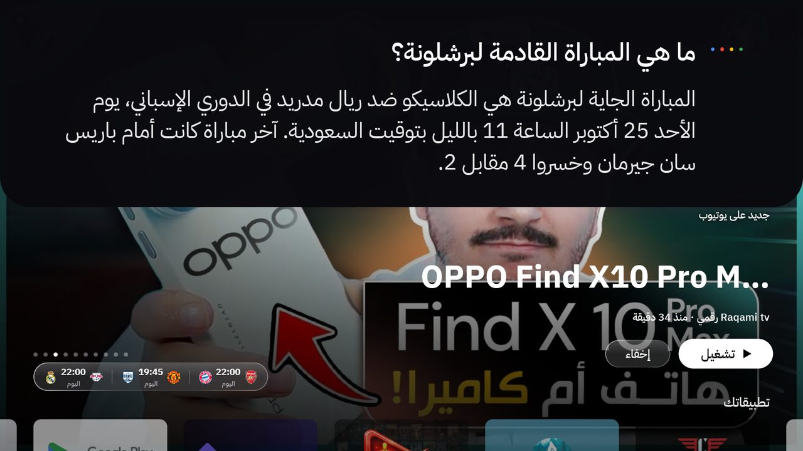
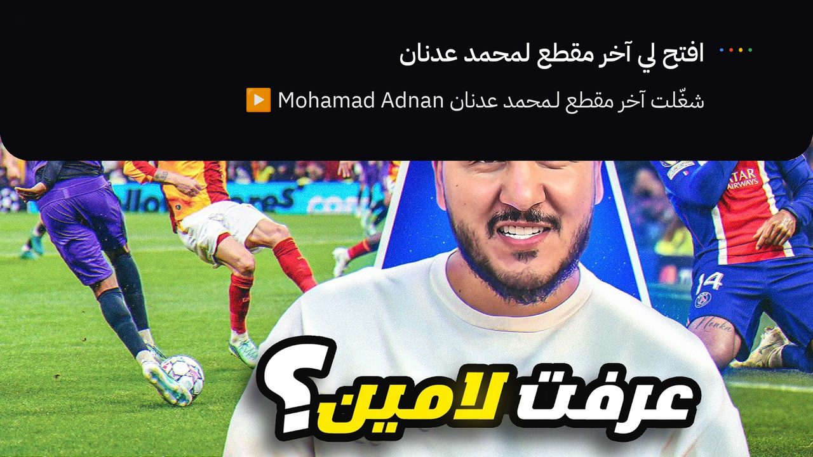
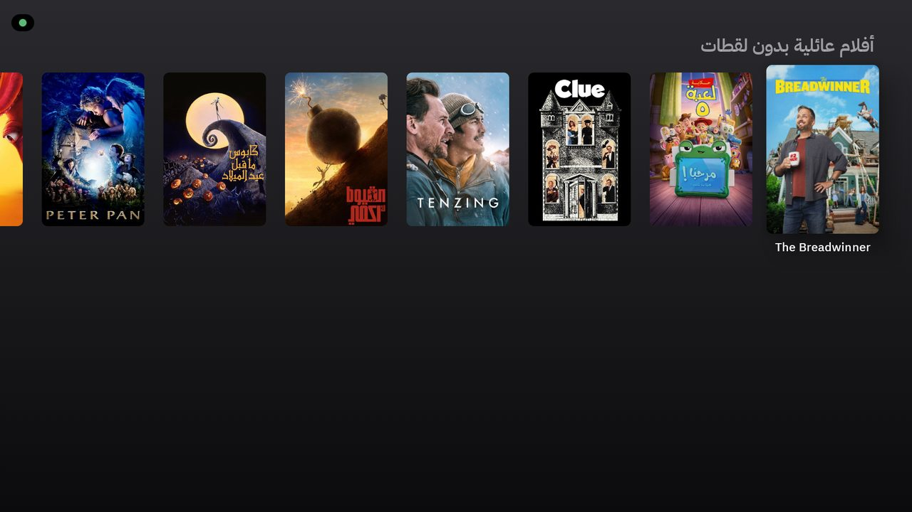
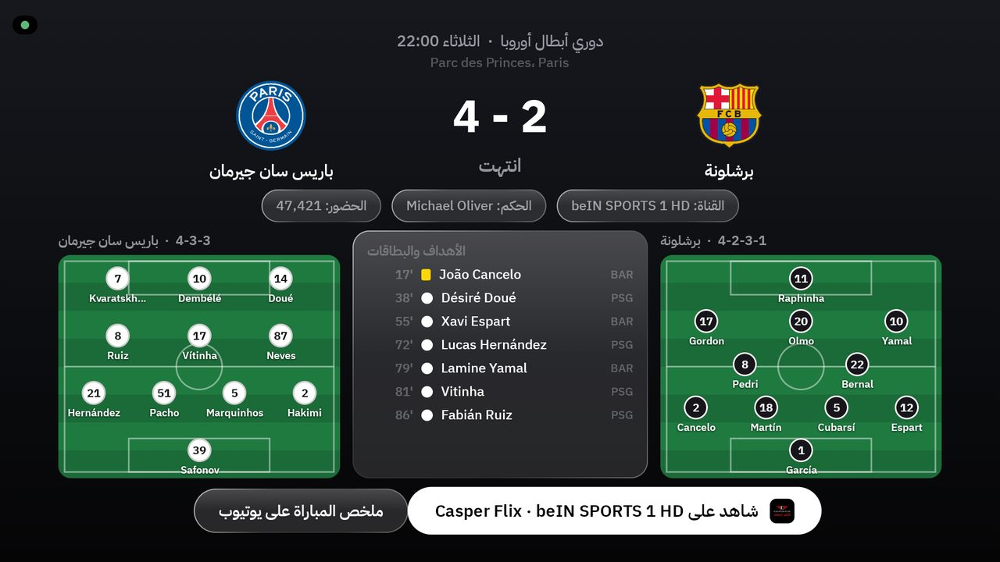
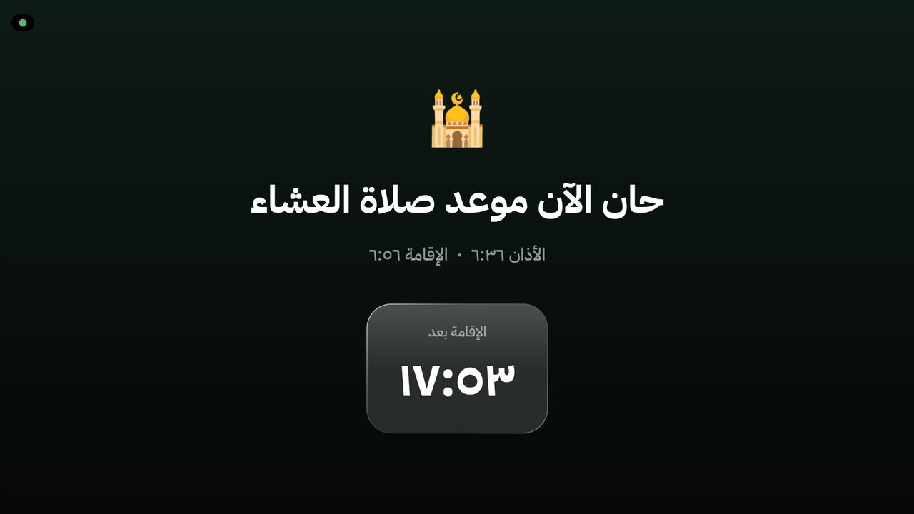

شاشتك تصير أذكى
وأقرب لبيتك
واجهة جديدة لشاشتك: تكلّمها بصوتك وتفهمك، تذكّرك بالصلاة، تتابع لك مبارياتك، وتعرض لك أحدث الأفلام والحلقات أول ما تفتحها.
أول ما تفتح الشاشة، تلقى اللي يهمك
القسم الكبير فوق له وضعين، تختار بينهم من الإعدادات: آخر مقاطع قنواتك في يوتيوب، أو الأكثر رواجاً من الأفلام والمسلسلات. وفوقه شريط تنقّل: البحث، الرئيسية، أفلام، مسلسلات، التطبيقات، والإعدادات.
كلّمه مثل ما تكلّم صاحبك
اضغط زر المايك وقل اللي تبيه بلهجتك. يرد عليك مكتوب ومسموع، ويسوي الشي بنفسه. ولو طلبك ناقص يسألك سؤال واحد بس.
يعرف مواعيد مبارياتك
اسأله عن أي فريق: متى يلعب، ونتيجة آخر مباراة، وعلى أي قناة.
- «متى مباراة برشلونة الجاية؟»
- «كم نتيجة الهلال؟»
- «شغّل مباراة فريقي» ويفتحها على تطبيق البث اللي تحدده

يفتح لك يوتيوب على اللي تبيه
آخر مقطع لقناة، آخر حلقة من برنامج معيّن، قناة مباشرة، أو أي موضوع تبي تبحث عنه.
- «افتح لي آخر مقطع لمحمد عدنان»
- «آخر حلقة من البرنامج الفلاني»
- «شغّل القناة الفلانية مباشر»

يقترح لك وش تشوف
يبحث في مكتبة ضخمة من الأفلام والمسلسلات والأنمي حسب النوع والبلد والسنة، ويعرض لك الاختيارات بالصور.
- «اقترح لي فيلم عائلي ما فيه لقطات»
- «أنمي أكشن جديد» ثم «افتح الثاني»
- «شي يشبه المسلسل اللي عجبني»

شغّل آخر حلقة من مسلسلييفتحها في تطبيق المشاهدة حقك
شغّل سورة الكهفالقرآن بملء الشاشة بالقارئ اللي تحبه
وش هذا اللي على الشاشة؟يشوف الشاشة ويجاوبك
علّي الصوت · وقّف · كم الساعةتتنفذ في أقل من ثانية
كل تفاصيل المباراة في صفحة وحدة
تختار أنديتك وبطولاتك، والنتائج تتحدث لحظة بلحظة وقت المباراة. اضغط على أي مباراة وتشوف كل شي.
- التشكيلة في الملعب لكل فريق
- الأهداف والبطاقات بالدقيقة
- الحكم والملعب وعدد الحضور
- تذكير قبل مباريات أنديتك
- زر يفتح المباراة على تطبيق البث المضبوط عندك

الشاشة تذكّرك… وتنتظرك
وقت الأذان تقفل الشاشة وتعرض عدّاد للإقامة، وبعدها ترجع مثل ما تركتها.
- المواقيت حسب مدينتك، والأذان بصوت جميل
- تختار وقت الإقامة لكل صلاة
- يوم الجمعة: تذكير وسورة الكهف
- للطوارئ: اضغط رجوع ٥ ثواني

تبي شي غير اللي تشوفه؟ اطلبه
كل اللي فوق مجرد البداية. افتح نفس الوكيل الذكي اللي ركّب لك TvHome، واطلب منه أي تعديل بكلامك العادي — يعدّل ويبني ويركّب التحديث على شاشتك.
خلّ مواقيت الصلاة والطقس على مدينة الرياض، وخلّ وقت الإقامة لصلاة المغرب ١٠ دقايق وباقي الصلوات ٢٠ دقيقة، وبعدها ركّب التحديث على الشاشة.
أضف صف جديد في الشاشة الرئيسية اسمه «أنمي الموسم» فيه أحدث الأنمي اللي نزلت حلقاته هالأسبوع، وحطه تحت صف المباريات.
غيّر اسم المساعد إلى «سند»، وخلّه يرد باللهجة الكويتية وبصوت أهدى، وخلّ ردوده أقصر.
وش نوع شاشتك؟
اختر شاشتك وسوِّ الخطوات. ما تاخذ خمس دقايق.
كل شاشات أندرويد نفس الطريقة
سوني، TCL، هايسنس، شاومي، فيليبس، توشيبا، وأي جهاز Google TV.
- سجّل دخول بحسابك في جوجل على الشاشة — المايك والمتجر يحتاجونه.
- فعّل وضع المطوّر: الإعدادات ← النظام ← حول ← اضغط على «Android TV OS build» (أو «الإصدار») ٧ مرات لين يقول «أنت الآن مطوّر».
- فعّل التصحيح: الإعدادات ← النظام ← خيارات المطوّر ← شغّل «تصحيح USB»، ولو تلقى «التصحيح عبر الشبكة» شغّله بعد.
- خذ عنوان الشاشة: الإعدادات ← الشبكة والإنترنت ← شبكتك ← «عنوان IP» (مثل 192.168.1.50).
- خلّ الشاشة والكمبيوتر على نفس الواي فاي. أول ما يتصل الكمبيوتر تطلع رسالة في الشاشة: اختر «السماح دائماً».
سامسونج: تحتاج جهاز Google TV صغير
شاشات سامسونج نظامها Tizen وليس أندرويد، وتطبيقات أندرويد ما تشتغل عليها.
- جيب جهاز Google TV صغير وركّبه على منفذ HDMI — مثل Google TV Streamer أو Chromecast مع Google TV أو Xiaomi TV Box أو Nvidia Shield.
- فعّل Anynet+ (HDMI-CEC) عشان ريموت الجهاز يشغّل الشاشة ويتحكم بالصوت: الإعدادات ← الاتصال (أو «عام») ← مدير الأجهزة الخارجية ← Anynet+.
- بعدها سوِّ خطوات أندرويد على الجهاز الصغير، وكمّل التركيب عادي.
LG: تحتاج جهاز Google TV صغير
شاشات LG نظامها webOS وليس أندرويد، فنفس حل سامسونج.
- جيب جهاز Google TV صغير وركّبه على HDMI.
- فعّل SimpLink (HDMI-CEC): الإعدادات ← عام ← الأجهزة ← إعدادات HDMI ← SimpLink — عشان ريموت واحد يكفيك.
- بعدها سوِّ خطوات أندرويد على الجهاز الصغير.
Fire TV من أمازون
نظامه مبني على أندرويد ويركب عليه، لكن ما فيه مساعد جوجل، فالمايك ما يوصل لرفيق. الأفضل جهاز Google TV.
- الإعدادات ← My Fire TV ← About ← اضغط على اسم الجهاز ٧ مرات.
- Developer options ← شغّل ADB debugging.
- خذ العنوان من About ← Network، وكمّل مثل أندرويد.
ركّبها بالطريقة اللي تريحك
الأسهل تخلي وكيل ذكاء اصطناعي يركّبها معك. وإذا تحب تسويها بنفسك، الخطوات كلها تحت.
المجلد ما فيه أي مفاتيح أو حسابات لأحد — كل واحد يحط مفاتيحه هو.
- جهّز الشاشة من قسم «وش نوع شاشتك».
- حمّل المجلد وفك الضغط في أي مكان بجهازك.
- افتح وكيل ذكاء اصطناعي يشتغل على جهازك داخل المجلد — مثل Claude Code أو Codex أو Cursor. لازم يكون وكيل يقدر يشغّل أوامر على الكمبيوتر، مو موقع محادثة عادي.
- الصق له البرومبت هذا وجاوب على أسئلته، وهو يكمّل الباقي.
أنت وكيل برمجة شغّال على جهازي، وأبغاك تركّب TvHome على شاشتي من البداية للنهاية. ١. استخدم المجلد اللي أنت فاتحه الحين. لو ما فيه ملف install.md حمّل المشروع من: https://github.com/Mo3athAmr/TvHome ٢. اقرأ install.md وامشِ عليه خطوة بخطوة. ٣. قبل ما تبدأ اسألني برسالة وحدة: عنوان IP الشاشة، مدينتي، المزايا اللي أبغاها، والمفاتيح (TMDB ومفتاح الذكاء الاصطناعي). لو ما عندي مفتاح علّمني كيف أطلعه. ٤. لا تعطّل ولا تحذف أي شي في الشاشة قبل ما تعرض لي القائمة وأوافق. ٥. مفاتيحي تنحط في ملف local.properties بس، ولا تكتبها في المحادثة. ٦. خلّ جهازي خفيف وقت البناء، وبعد ما تخلص قل لي وش ركّبت وكيف أرجّع كل شي. شاشتي جاهزة: وضع المطوّر والتصحيح مفعّلين، والشاشة والكمبيوتر على نفس الواي فاي.
١ركّب الأدوات في الكمبيوتر
تحتاج JDK 21 وAndroid SDK (المنصة 36) وadb. أسهل شي تركّب Android Studio وهو يجيبها كلها.
java -version adb version
٢حمّل المجلد وحط مفاتيحك
فك ضغط المجلد، وانسخ ملف المثال، وعبّي فيه مسار SDK ومفتاح TMDB ومفتاح الذكاء الاصطناعي.
cd TvHome-main cp local.properties.example local.properties
مدينتك غير الخبر؟ اطلب من الوكيل الذكي يغيّرها، أو عدّلها في prayer/PrayerTimes.kt.
٣ابنِ التطبيق
./gradlew :app:assembleRelease
ياخذ كم دقيقة أول مرة. الناتج في app/build/outputs/apk/release/
٤ركّبه على الشاشة
غيّر 192.168.1.50 لعنوان شاشتك، ووافق على رسالة «السماح» في الشاشة.
adb connect 192.168.1.50:5555 adb install -r app/build/outputs/apk/release/app-release.apk TV=192.168.1.50:5555 ./scripts/after-install.sh
٥خلّها الواجهة الرئيسية
يخلي TvHome يطلع لما تضغط زر البيت، ويضبط شاشة التوقف. الواجهة الأصلية تتعطّل بس — ما تنحذف — وترجع متى ما بغيت.
TV=192.168.1.50:5555 ./scripts/set-home.sh
٦إضافات (اختياري)
قنواتك في يوتيوب: ملف youtube_channels.txt فيه معرّف كل قناة أو @اسمها في سطر. والسطر الثاني يضبط الساعة لو انقطعت الكهرباء.
adb push youtube_channels.txt /sdcard/Android/data/com.moath.tvhome/files/ adb shell settings put global ntp_server 162.159.200.123
وبعدها من الريموت: الإعدادات ← تخصيص، واختر الأذان والأندية والمساعد وشاشة التوقف.
TV=192.168.1.50:5555 ./scripts/restore.sh — يرجّع كل شي، ولو تبي تحذف TvHome أضف --uninstall.أكيد عندك سؤال
يحذف شي من شاشتي؟
لا. ما ينحذف شي، وأي تطبيق يتعطّل يكون بموافقتك ويرجع بأمر واحد.
أقدر أرجّع شاشتي مثل أول؟
أكيد. سكربت الإرجاع يرجّع الواجهة الأصلية وكل التطبيقات المعطّلة.
يحتاج اشتراك أو فلوس؟
TvHome مجاني. مفتاح TMDB مجاني، ومفتاح الذكاء الاصطناعي فيه خيار مجاني (Gemini) بحدود يومية.
وش يصير لو ما حطيت مفتاح ذكاء اصطناعي؟
كل شي يشتغل عادي، بس رفيق ما يجاوب الأسئلة. الأوامر السريعة مثل الصوت وفتح التطبيقات تشتغل بدونه.
يشتغل على سامسونج أو LG؟
مو مباشرة، لأن نظامها مو أندرويد — حتى وضع المطوّر فيها (مثل 12345 في سامسونج) لتطبيقاتها هي بس. ركّب جهاز Google TV صغير على HDMI ويصير عندك كل شي.
فيه محتوى ما يناسب العائلة؟
فيه فلتر دائم يمنع المحتوى الفاضح في الاقتراحات والبحث، وتقدر تطلب «عائلي» أو «ما فيه لقطات».
من وين يجيب الأفلام والمباريات؟
TvHome ما يبث شي بنفسه؛ يفتح لك الشي في التطبيقات اللي عندك. أنت المسؤول عن التطبيقات والإضافات اللي تستخدمها.